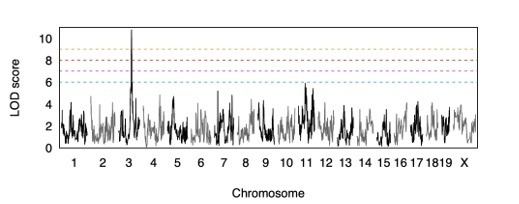
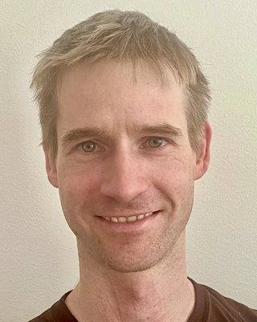

Experimental Nephrology, Department for BioMedical Research, University of Bern, and Department of Nephrology, University Hospital Bern
Moor Lab
Why does the same kidney disease thin one person’s bones and calcify another’s arteries? We study the bone and mineral disorders of chronic kidney disease, and the genes that make them differ from patient to patient.


Matthias B. Moor, MD PhD
Physician-scientist and nephrologist. SNSF Ambizione research group leader and attending physician at the Department of Nephrology, University Hospital Bern, starting in 2026. He runs a specialized clinic and bone biopsy program for kidney-related bone disease.
Medical degree from the University of Bern (2012), MD-PhD from the University of Lausanne (2016), Privatdozent in experimental nephrology at Bern (2022). Visiting scientist at Karolinska Institutet, Stockholm, 2022–2024, in the Patrakka/Olauson lab.
News
- Jun 2026
New preprint: precision-cut kidney slices from the BXD founder strains show that nephrotoxicity can be modelled ex vivo for population genetics. bioRxiv
- Feb 2026
Published in J Cell Commun Signal: in kidney disease, the renal response to FGF23 shifts from phosphaturia toward inflammation. Read the paper
- 2026
The lab starts at the Department for BioMedical Research, University of Bern, funded by an SNSF Ambizione fellowship.
- Oct 2025
New preprint with Greg Keele: mapping the genetics of tissue cell composition in genetically diverse mice. bioRxiv
- 2025
A diagnostic bone biopsy program for kidney-related bone disease opens at University Hospital Bern.
Research
We study renal osteodystrophy, the abnormalities of bone in chronic kidney disease, and how bone secretes the phosphate-regulating hormone FGF23 and how the kidney responds to it.
Kidney-related bone disease comes in forms that turn over too fast, too slowly, or fail to mineralize, often alongside calcification of the blood vessels. These forms look alike from the outside, usually need a bone biopsy to tell apart, and can respond in opposite ways to the same osteoporosis drug. We want to understand why, improve the treatment options, and learn how bone cells sense and handle phosphate.
Questions we are working on
- Bone in kidney disease
- Which genetic differences decide whether kidney disease leads to low or high bone turnover and cortical porosity?
- Response to treatment
- Why do antiresorptive drugs such as bisphosphonates help bone in some settings and harm it in others?
- Bone and blood vessels
- Are bone loss and vascular calcification driven by shared or separate mechanisms, and can they be treated independently?
- FGF23 signaling
- How does the kidney’s response to FGF23 shift from controlling phosphate toward inflammation as disease progresses?
How we work
Clinical cohorts, precision-cut kidney slices, ex vivo bone assays, transgenic and genetically diverse mouse models, population genetics, bulk and single-nucleus RNA sequencing, and molecular and cell biology. The aim is to find new diagnostic and therapeutic targets for some of the most serious complications of chronic kidney disease.
Publications
Recent
- Andres J*, Phengpol N*, Burmakin M, Olauson H, Patrakka J, Moor MB. Population genetics meets precision-cut kidney slices: nephrotoxicity modelled ex vivo in the founder strains of the BXD mouse consortium. bioRxiv 2026. doi:10.64898/2026.06.16.732581
- Keele GR, Moor MB. Genetic dissection of tissue composition in genetically diverse mouse populations. bioRxiv 2025. doi:10.1101/2025.10.13.682042
Five key papers as first or last author
- Moor MB, Burmakin M, Levin A, Korkut GG, Brodin D, Wernerson A, Bruchfeld A, Bárány P, Witasp A, Patrakka J, Olauson H. The renal response to FGF23 shifts from phosphaturia toward inflammation in kidney disease. J Cell Commun Signal 2026. doi:10.1002/ccs3.70061
- Lindberg K*, Ovchinnikova O*, Moor MB*, Pirault J, Ketelhuth DF, Olauson H, Hansson GK, Larsson TE. Fgf23 expression increases atherosclerotic plaque burden in male ApoE deficient mice. Atherosclerosis 2025. doi:10.1016/j.atherosclerosis.2025.119158
- Toepfner N, von Meißner WCG, Strumann C, Drinka D, Stuppe D, Jorczyk M, Moor J, Püschel J, Liss M, von Poblotzki E, Berner R, Moor MB**, Chao CM**. Comparative safety of the BNT162b2 messenger RNA COVID-19 vaccine vs other approved vaccines in children younger than 5 years. JAMA Netw Open 2022. doi:10.1001/jamanetworkopen.2022.37140
- Moor MB, Suter-Riniker F, Horn MP, Aeberli D, Amsler J, Möller B, Njue LM, Medri C, Angelillo-Scherrer A, Borradori L, Radonjic-Hoesli S, Seyed Jafari SM, Chan A, Hoepner R, Bacher VU, Mani LY, Iype JM, Hirzel C, Maurer B**, Sidler D**. Humoral and cellular responses to mRNA vaccines against SARS-CoV-2 in patients with a history of CD20 B-cell-depleting therapy (RituxiVac). Lancet Rheumatol 2021. doi:10.1016/S2665-9913(21)00251-4
- Ansermet C*, Moor MB*, Centeno G*, Auberson M*, Hu DZ, Baron R, Nikolaeva S, Haenzi B, Katanaeva N, Gautschi I, Katanaev V, Rotman S, Koesters R, Schild L, Pradervand S, Bonny O, Firsov D. Renal Fanconi syndrome and hypophosphatemic rickets in the absence of xenotropic and polytropic retroviral receptor in the nephron. J Am Soc Nephrol 2017. doi:10.1681/ASN.2016070726
* shared first authorship, ** shared senior authorship.
Complete list: PubMed, Google Scholar, ORCID, BORIS Portal.
Funding and awards
Current
- Swiss National Science Foundation, Ambizione fellowship (awarded 2025)
- Burgergemeinde Bern Stiftung
At Karolinska Institutet, Stockholm
- Novo Nordisk Nordic Foundation, project grant in endocrinology and metabolism, co-PI, 2024–2025 (DKK 2’000’000)
- Swiss National Science Foundation, Postdoc.Mobility, 2023–2024 (CHF 146’550)
- KI Research Foundation, 2023 (SEK 155’800)
At the University of Bern
- NCCR Kidney.CH Junior Grant, 2019–2022 (CHF 185’000)
- Inselspital early-career grant for patient-oriented research (CHF 79’464)
Awards
- 2017 Publication Award, Swiss Society of Nephrology, shared with Camille Ansermet, PhD
- 2015 Best Presentation Award, MD-PhD Program retreat, UNIL / EPFL Lausanne
- 2013 Best Presentation Award, Department of Pharmacology and Toxicology retreat, University of Lausanne
- 2011 Travel grant, Astellas
- 2008–2016 Fellow of the Swiss Study Foundation
Courses
- Since 2022Lecturer in nephrology, Faculty of Medicine, University of Bern
- 2023–2024Course material for “Advanced Pathophysiology”, Master’s program in Biomedical Analysis, Karolinska Institutet
- Since 2020Course material and co-tutor, Module 3 “Calcium & Phosphate”, Educational Program in Translational Nephrology (CAS/DAS), run by the Health Sciences e-Training Foundation, NCCR Kidney.CH / Zurich Kidney Center and the University of Bern
CV
Positions
- Since 2026SNSF Ambizione research group leader, Experimental Nephrology, Department for BioMedical Research, University of Bern
- Since 2026Attending physician, Department of Nephrology, University Hospital Bern
- Since 2022Privatdozent in experimental nephrology, Faculty of Medicine, University of Bern
- 2025–2026Deputy attending physician, Department of Nephrology, University Hospital Bern
- 2024–2025Resident physician, Medical Clinic, Regional Hospital Emmental, Burgdorf
- 2022–2024Visiting scientist, Patrakka/Olauson lab, Karolinska Institutet, Stockholm
- 2019–2022Resident physician and junior research group leader, Department of Nephrology, University Hospital Bern
- 2016–2018Resident physician, Medical Clinic, Tiefenau City Hospital, Bern
Education
- 2026Swiss board certification in nephrology
- 2016MD-PhD, Department of Pharmacology and Toxicology, University of Lausanne (Prof. Olivier Bonny)
- 2012Medical doctorate and Master of Medicine, University of Bern
People
Principal investigator
- Matthias B. Moor, MD PhDGroup leader
Current trainees
- Dr. Yunsu JangMD-PhD candidate, since 2026
- Jana AndresScientific assistant and MD doctoral candidate, since 2025
- Noemi GallikerMD doctoral candidate, since 2025
- Elena ParisiMD doctoral candidate, since 2025
- Anouk KünzlerMaster of Medicine candidate, since 2026
- Michelle SidlerMaster of Medicine candidate, since 2026
- Marcia BeuingMaster of Medicine candidate, since 2026
Former trainees
- Nichakorn Phengpol, MScVisiting PhD student, Karolinska Institutet, 2023–2024, with Prof. Jaakko Patrakka. Now research associate, Department of Physiology, Chiang Mai University
- Katalin Bartos, PhDPhD student, University of Bern, 2019–2022, with Prof. Uyen Huynh-Do. Now scientific expert in QA product release, CSL Behring Switzerland
- Finola Legrand, MScMaster’s student, University of Lausanne, 2015–2016, with Prof. Olivier Bonny. Now quality assurance expert, Takeda Switzerland
- Daniel Harwood, BScSummer undergraduate research student, University of Lausanne, 2015, with Prof. Olivier Bonny. Now MD student, University of Pennsylvania
- Dimitri Vetterli, MDMD doctoral candidate, University of Bern, 2013–2015, with Prof. Dominik Uehlinger. Now consultant, Department of Pediatrics, Cantonal Hospital Aarau
Media
- Our RituxiVac study on COVID-19 vaccine responses after anti-CD20 therapy was cited in German and Swedish health policy documents and covered by news agencies.
- Our safety study of the BNT162b2 vaccine in children under five was read nearly 70’000 times online. How the project started
- Invited talk, Swiss Society of Nephrology annual meeting, “Hot Topics in Basic and Translational Science”, 2022
- Invited talk, Bern Rheumatology & Immunology Day, 2021